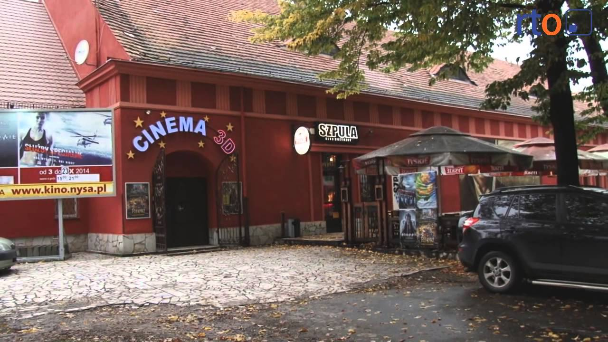

Kino
 Kino Cinema N3D jako kino cyfrowe powstało we wrześniu 2011roku. Jest kontynuatorem "starego" kina POKÓJ, które funkcjonowało od ponad 50 lat i wychowało kilka pokoleń kinomanów. Kino posiada dwie sale cyfrowe na 318 i 135 miejsc wyposażone w supernowoczesne fotele, projektory cyfrowe DCI Christie i Barco oraz sprzęt nagłaśniający Dolby Digital Stereo CP 500. Obie sale są klimatyzowane i przystosowane dla osób niepełnosprawnych. W hallu kina usytuowano kawiarnię. W kinie organizowane są przeglądy filmowe , Noce Horrorów i Grozy, festiwale muzyczne oraz seanse edukacyjne.